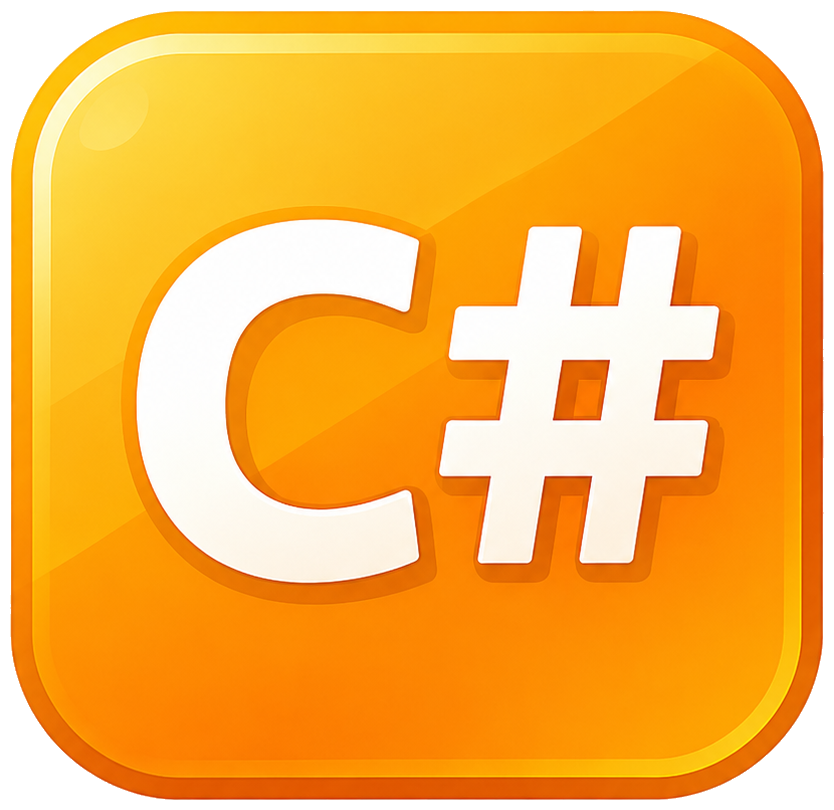

Labo 1 · week 4
<, >, ==, !=, …if: code die enkel soms uitvoertif/else: een plan Belse if: meerdere gevallen afhandelenVandaag leren we beslissingen nemen. Dat is meer dan sommigen aan de toog van de frituur kunnen.
Onze programma’s liepen braaf regel per regel van boven naar onder. Zoals een algoritme om brood te kopen:
Stap 7: het enige deel van het algoritme dat nooit faalt.
Een beter algoritme reageert op de omstandigheden: is de bakker gesloten? Is er genoeg geld?
Het programma neemt beslissingen op basis van aanwezige informatie.
Voorbeelden in een bestelsysteem:
Een programma zonder beslissingen is als een gps die altijd “rechtdoor” zegt.
Een booleaanse expressie is een stukje code dat true of false oplevert.
| C#-syntax | Betekenis |
|---|---|
> |
groter dan |
< |
kleiner dan |
== |
gelijk aan |
!= |
niet gelijk aan |
<= |
kleiner dan of gelijk aan |
>= |
groter dan of gelijk aan |
Relationele operatoren: geen datingapp, wel vergelijkingen.
= of ==?Waarschuwing
“Gelijk aan” schrijf je met twee symbolen, omdat één = al gebruikt wordt voor een toekenning.
Eén = geeft een bevel, twee == stellen een vraag. Drie === is JavaScript, en daar praten we hier niet over.
Welke expressies leveren true op?
number > 10 → ❌ falsenumber >= 10 → ✅ truenumber != 3 → ✅ truenumber < 5 → ❌ false"C#" == "c#" → ❌ false4 < 7 is true. Net als “maandag komt altijd te vroeg”.
De types die je vergelijkt, moeten vergelijkbaar zijn:
ifEen if bevat code die enkel uitvoert als een booleaanse expressie true oplevert. Dat heet conditionele code.
if}Een flowchart is een stripverhaal voor programmeurs. Alleen met meer ruiten en minder superhelden.
Hoe oud ben je?
16
Bedankt!In België is stemmen voor de meeste verkiezingen zelfs een plicht. Ook dat is een if.
Zonder accolades hoort enkel de eerste regel bij de if. De tweede regel wordt altijd uitgevoerd, ook met een fout wachtwoord. Het inspringen verandert daar niets aan.
Belangrijk
Voor ons is het simpel: we schrijven if altijd met accolades.
Accolades vergeten is als je broek vergeten: technisch kan je vertrekken, maar het loopt slecht af.
if/elseVaak wil je iets anders doen als niet aan de voorwaarde voldaan is.
if/else: het enige moment waarop een computer een plan B heeft.
if/else in C#elseWat je altijd wil doen, hoort niet in een vertakking. Zet het na de volledige if/else:
“Fijne dag nog!” krijg je altijd. Zelfs als je net betrapt bent.
else ifif in een ifif (password == "gEhEiM")
{
Console.WriteLine("Geheime informatie: ...");
}
else
{
Console.WriteLine("Dat klopt niet! Je krijgt nog één kans...");
password = Console.ReadLine();
if (password == "gEhEiM")
{
Console.WriteLine("Geheime informatie: ...");
}
else
{
Console.WriteLine("Ook niet juist.");
}
}Te diep nesten is als matroesjka’s openen: leuk, tot je de kleinste zoekt.
Niet het juiste wachtwoord, maar bijna? Dan geven we een hint.
else ifDoet exact hetzelfde, maar leest van boven naar onder als een lijstje gevallen.
Warm! Koud! Programmeren is eigenlijk “warmer, kouder” spelen met de compiler.
Geslaagd17 >= 10 is al true, dus de tweede voorwaarde wordt nooit bekeken. Zet de strengste voorwaarde eerst.
De eerste ware voorwaarde wint. Zoals aan de kassa: wie eerst komt, eerst maalt.
temperature |
Output |
|---|---|
| 22 | Lekker weer |
| 35 | Tropisch! |
| 10 | Blijf binnen |
Bij 10 graden binnenblijven. Typisch Belgisch weerbericht.
%De modulo-operator % geeft de rest van een deling.
Een getal is even als number % 2 == 0.
% is geen korting. Sorry.
| Wat | Hoe |
|---|---|
| vergelijken | <, >, <=, >=, ==, != → true of false |
| soms iets doen | if (voorwaarde) { ... } |
| anders iets anders doen | if { ... } else { ... } |
| meerdere gevallen | if { ... } else if { ... } else { ... } |
Belangrijk
Altijd accolades. En bij else if: de eerste ware voorwaarde wint, dus let op de volgorde.
Je kan nu beslissingen nemen. Begin maar met de moeilijkste: stoofvlees of bicky?
Maak in de klasse Beslissingen:
👉 Klaar? Dan OhmsLaw en PocketMoney. De uitbreiding van ShoeSeller volgt in labo 2.
if (exercisesDone) { naar huis } else { nog even blijven }

Programmeren & OOP · H4 Beslissingen · labo 1